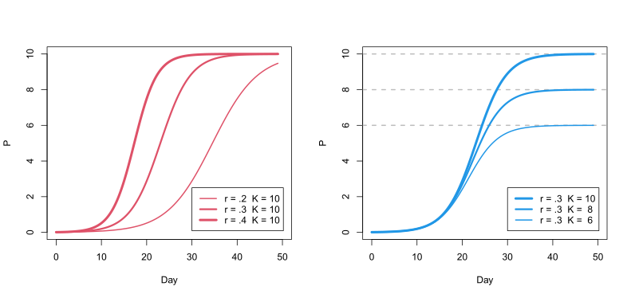
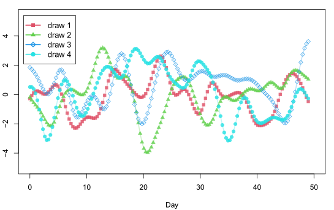
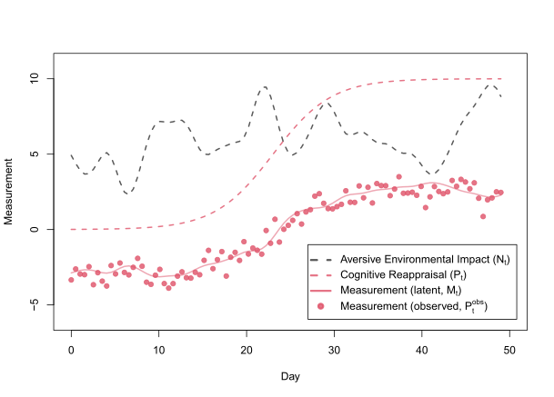
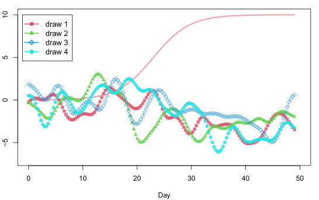

Process, Measurement, and
Environmental Fluctuation
All at Once:
A Naive Theory-Driven Analysis of Intra-individual Dynamics
Yongfu Liao
August 12, 2023
1
Introduction
The surge of ecological momentary assessment (EMA) studies in
clinical sciences has called for new statistical methods to analyze
intra-individual (i.e., idiographic) longitudinal data. A variety of
techniques, such as vector autoregressive (VAR) models, have been
proposed to infer the (Granger) causal relationships between variables
from such data (for an overview, see Bringmann (2021) and Piccirillo & Rodebaugh
(2019); also see Ryan & Hamaker (2022) for
continuous-time VAR models). These VAR models are often employed more or
less as data-driven, theory-free inferential devices, in which the
researchers place no prior assumptions on the dynamical processes
underlying change and measurement. We underscore the risks associated
with such practices and emphasize the often-neglected issue of
connecting measurements to theory—when a measurement is
presumed to capture only the intended construct, the resulting
analysis can never challenge, and therefore lead to refinements of, the
measurement itself (Bringmann & Eronen, 2016). We
illustrate this through a simple theory-driven analysis of change
processes, in which the purity of the measurement is not
assumed. Through the analysis, it is shown that without explicit
theoretical assumptions imposing constraints on how measurement and
change processes might evolve and interact over time, the resulting
inferred processes will inevitably conflate multiple untraceable sources
of variation, obscuring the information that could be gained from
statistical inference.
Specifically, we are pointing to the importance of teasing out
process variation from (pure) measurement errors. This is critical since
change processes are independent of the measurement process—if
the fluctuations observed in repeated measures of a process reflect
only measurement errors rather than changes in that process,
these observed decreases or increases will not carry over to
the process’s future states. However, complicating this is the fact that
measurements are likely not pure. Instead of singly measuring
the process of interest, psychological measurements are far from perfect
that they probably also measure irrelevant processes to our dismay.
Therefore, we are now faced with the confusing variation observed in a
time series—it could either arise from measurement errors, changes in
the process of interest, changes in the process of disinterest, or a
combination of any of the former.
In this study, we illustrate the above-discussed scenario through
statistical analyses of simulated data. The context and theory we
choose, as later seen, are deliberately naive and simplified. This
allows us to provide a simple yet clear demonstration of embedding
theoretical assumptions into tailored statistical analysis. This also
paves the way for further discussion of potentially problematic
practices in EMA data analysis. Implications for future research are
also discussed.
2 What’s
in a Measure
In the present article, we distinguish between two types of processes
and measurement errors. The first process type is what the researchers
are interested in studying. In a clinical setting, this might be a
theorized process that leads to improved clinical outcomes during
treatment. Here, we take cognitive reappraisal as an example.
The second process type is of disinterest to the researchers but
nevertheless sneaks into the measurement. For our current purpose, we
assume this process to be a state-like process influenced by
environmental triggers of stress and any potential adverse effects that
lower an individual’s evaluation of his or her cognitive
reappraisal ability1. Note that the first process,
cognitive reappraisal, is more of a trait-like, slow-changing
construct as compared to the second state-like perceptual process.
Distinguishing between state- and trait-like constructs, as shown later,
affects how we theorize and model the speed of change in these temporal
processes.
Finally, the measurement tool in the current context would be a
hypothetical cognitive reappraisal scale. As hinted previously, the
measurement process inevitably conflates variation from three different
sources. The first is the construct it purports to measure, that is, the
true, trait-like ability of cognitive reappraisal. The second is the
state-like, rapid-changing process reflecting the adversity of the
surrounding environment. The remaining variation comes from pure
measurement errors, which are introduced every time a measurement is
made and are independent of the former two processes.
For the sake of simplicity, in the following text, the first
process—the true ability of cognitive reappraisal—is termed the
P-process and given the abbreviation P; the second process—the adverse
impact of the surrounding on the evaluation of cognitive reappraisal—is
termed the N-process and abbreviated as N; the latent construct measured by
the cognitive reappraisal scale, which is a function of both P and N, is abbreviated as M, and S denotes the realized observations
of M. Figure1 summarises
these relationships between the aforementioned variables.
Figure 1: Presupposed relationships between
P-process (cognitive reappraisal, P), N-process (adverse
environmental impact on the evaluation of cognitive reappraisal, N), environmental fluctuation (E), latent (M), and observed (S) scores of the cognitive
reappraisal scale. The arrows indicate the direction of influences.
Circled and open nodes indicate unobserved and observed variables,
respectively.
3
Simulation
In this section, we describe the simulation of each variable in Figure 1 and the data-generating process of the
full model. Later in section 4, we describe
the statistical inference for parameter recovery from the simulated
data.
To provide some context, consider the scenario in which a
hypothetical individual, Jane, was receiving CBT for the treatment of
mild depression. During the 49 days between the first and the last
session, Jane completed the cognitive reappraisal scale daily to assess
her progress. In this hypothetical scenario, the cognitive reappraisal
scale is the only collected measure. Later, we relax this
assumption and explore the benefits of collecting multiple measures.
In the simulation described below, we will be simulating 98
consecutive scores (2 per day) of the cognitive reappraisal scale. Note
that the observations do not need to be equally spaced for the
statistical model to work since we will be using a continuous-time
model. This also means that missing data are handled automatically and
will not bias inference, as long as they are missing at random.
3.1
Growth of cognitive reappraisal
We conceptualize cognitive reappraisal as a skill that gradually
develops during the treatment. Therefore, cognitive reappraisal is
modeled to grow smoothly during the 49-day period. In particular, the
trajectory of the growth is modeled as a logistic function, which can be
more informatively expressed as a differential equation in (1).
$$
\frac{d P}{dt} = r P (1 - \frac{P}{K})
\qquad{(1)}$$
Equation (1) is known as the logistic population growth, which is
often used to model the growth of the population size of a species in
Biology and Ecology. The left-hand side of Eq. (1), $\frac{dP}{dt}$, could be read as the
rate of change in P.
The right-hand side of Eq. (1) indicates that
this rate of change is the product of three components: (a) the
intrinsic growth rate parameter r, (b) the current size of P, and (c) the size of the current
P relative to the carrying
capacity parameter K(Gotelli, 2008).
Figure 2 illustrates the trajectories
of logistic growth with different configurations of r and K when the initial size of P is set to 0.01. Qualitatively, the intrinsic growth
rate r determines how
fast, when given a fixed K and P, P grows. With a larger value of
r, P approaches its potential maximum
more quickly. This is revealed by the three logistic growth curves with
a different r in the left
panel of Figure 2. On the other hand, the
carrying capacity K represents
the upper bound of P. As P increases and approaches K, the term $1 - \frac{P}{K}$ approaches zero, and so
does the growth rate $\frac{dP}{dt}$.
The right panel of Figure 2 illustrates
three growth curves with a different upper bound K.

Logistic growth of P according to different
configurations of r and K. The initial value of P is set to 0.01 for all trajectories.
Modeling the growth of cognitive reappraisal as a logistic growth
curve is an ideal assumption, just as a linear growth
assumption is in most models. Logistic growth, however, is arguably more
realistic than linear growth in that it models the boundaries of growth
(0 < P < K) and
the deceleration of growth when approaching the boundaries. The shape of
the growth over time approximated by a logistic function is thus
suitable for modeling a wide range of growth phenomena in nature.
3.2
Fluctuating environmental impact
A state-like process is proposed to model the impacts introduced by
external stochastic factors on the measurement of cognitive reappraisal.
These external impacts are however different from random measurement
errors in that they are continuous and locally dependent—the
impact left on individuals carries on to the immediate and near future
but dissipates as time goes by. On the contrary, measurement errors are
discontinued and independent—measurement errors only occur when
measurements are made, and the current magnitude of an error provides no
information about any of the future or past measures. The continuous
and local-dependent property allows the modeling of an individual’s
experience as a continuum and is based on the idea that, for instance,
the stress level experienced by a person currently and 5 seconds later
should be nearly identical.
To model this formally, Gaussian processes are used2.
Gaussian processes allow one to model the covariances between a set of
observations as a function of the distances between them. This is
illustrated in Equation (2), in which the drawing of a set of time
series observations with the help of Gaussian Processes is formulated.
The first line in Eq. (2) specifies that T observations are drawn from a zero
mean multivariate normal distribution with a covariance matrix K. The essence of Gaussian
processes is a covariance function (a.k.a Gaussian process kernel) that
defines how the covariance matrix K is constructed. This is
shown in the second line of Eq. (2), in which ki, j
denotes the entry on the ith row and jth column in K. The expression on the
right-hand side specifies how ki, j
is calculated. di, j2
denotes the squared distance between Ni and Nj, which is
defined as the squared difference between the times at which Ni and Nj are recorded.
η can be intuitively
interpreted as an upper-bound value for all ki, j
(since exp(−ρdi, j2) < 1),
and ρ can be thought of as a
parameter controlling how quickly ki, j
decays as the distance di, j2
increases.
Figure 3 sketches four independent
draws of time series observations from the same 150-dimensional
multivariate normal distribution. This multivariate normal has its
covariance matrix K
generated by a kernel function with parameters η = 2 and ρ = .15 and 150 × 150 pairs of distances calculated from
the 150 observations sampled at a fixed frequency ($\frac{150}{49} \approx 3.06$ times per day).
Therefore, for each draw of the time series observations in Figure 3, the timespan between each pair of
adjacent observations is about 7.8 hours ($24
~\text{hours} \times \frac{49}{150}$).

Figure 2: Four independent sets of time series drawn from a
zero mean multivariate normal, whose covariance matrix is generated by a
Gaussian process kernel in Eq. (2) with parameters
η = 2 and ρ = .15.
The characteristics of Gaussian processes enable us to naturally
model the smooth transition between nearby states and, at the same time,
the (nearly) independent fluctuations between distant states. This
matches people’s daily experiences. For instance, the current stress
level is strongly predictive of the stress levels in future hours but is
a bad predictor of stress levels weeks later. Likewise, there may be
difficult times in life, such as when unpredictable major life events
strike that people experience a sudden increase in stress level. This
experience of a relatively stable period intermittent with rapid
fluctuations can also be modeled with Gaussian processes. Take draw 2 in
Figure2 for
example, the sharp dip around day 20 indicates a period of fast-changing
states, whereas the states between day 35 and 45 are relatively
stable.
The purpose of modeling the impacts of such experiences is to
separate their contribution to the measurement from other sources. This
is based on the assumption that psychological measurements partially
measure unwanted constructs, which, in turn, is based on the intuition
that, say, when a stressed individual is facing challenges one after
another, the failure to handle some of these challenges can lower one’s
judgment of his or her ability. The decreased measurement score thus
does not necessarily indicate a measurement error or a drop in one’s
true ability but may rather be an indicator of environmental
adversity.
3.3
Measurement process
The measurement process conflates the former two processes—the
P-process and the N-process—and adds in some random
noise every time a measurement is made. This is formulated in Equation
(3).
$$
\begin{gathered}
\mathrm{ P_{t}^{obs} } \sim \text{Normal}( M_t, \sigma ) \\
M_t = b ~ \left[ a P_t - \left( 1 - a \right)
N_t \right] - c
\end{gathered} %\label{eq:measurement-model}
\qquad{(3)}$$
Ptobs
represents the observed score of the cognitive reappraisal scale
collected at time t. The
measurement model here assumes that the observed score Ptobs distributes
normally3 around the latent score Mt with the
standard deviation of measurement errors being σ. In addition, the latent score
Mt is
itself a composite of multiple factors—the cognitive reappraisal skill
(Pt) and
the adverse environmental impact (Nt). The
parameter a (constrained
between 0 and 1) specifies the contribution of Pt—relative to
Nt—to
Mt. The
parameters b (scaling factor)
and c (intercept) work
together to map the scale of the underlying processes to that of Mt.
3.4
Data-generating process
Gathering the above three processes gives the full data-generating
process for our simulation, represented formally in Equation (4). The formulas in Eq. (4) are
identical to those in the previous equations except for Eq. (1). Here, Eq. (1) is
reexpressed as a forward Euler form in which the computation of P over time is more
straightforwardly conveyed—the immediate next state Pt + Δt
equals the current state Pt plus a tiny
change $r P_t (1 - \frac{P_t}{K}) \Delta
t$. Iterating this formula, starting with the initial value P0, over 49 days results
in a collection of Ps over
this period.
$$
\begin{aligned}
& \hphantom{xxxx} \textbf{Measurement Model} \\
& \hphantom{xxxxx} \mathrm{ P_{t}^{obs} } \sim \text{Normal}(
M_t, \sigma ) \\
& \hphantom{xx} M_t = b ~ \left[ a P_t -
\left( 1 - a \right) N_t \right] - c
\end{aligned}
$$
Table 1 lists the parameters and their
values for the simulation. The number of observations T is set to 98, meaning that two observations are
simulated for each day. For convenience, the time intervals between
consecutive observations are set to be equal. Thus, with T and a fixed interval between
observations, the timestamps for the observations could be determined,
which are then used to compute the distances between all pairs of the
observations for the Gaussian process kernel.
Table 1: Parameter values for the simulation in Eq (4). The last column specifies the prior distributions
assigned to the parameters in the statistical model described in section
4.
Parameter
Coded Name
True Value
Prior
r
r
0.30
Beta(1.7,2)
K
K
10.0
Normal(10,3)
P0
P0
0.01
Normal+(0,0.5)
η
max_cov
2.00
Normal+(0,3)
ρ
rate
0.20
Normal+(0,0.3)
σ
s1
0.50
Normal+(0,1)
a
a1
0.78
Beta(3.8,2.5)
b
b1
0.74
Beta(2,1)
c
c1
3.14
Normal+(0,2)
Running the simulation specified in Eq. (4) with the parameter values
in Table 1 produces Figure3. The dashed curves in the figure sketch the
trajectories of the unobserved processes over time—the gray
curve depicts the fluctuating environmental impacts on the measurement
of cognitive reappraisal (Nt), and the
smooth red curve illustrates the growth of the cognitive reappraisal
skill (Pt). The latent
score of the cognitive reappraisal scale (Mt), which is a
product of the former two processes, is represented as the solid red
curve, and the red dots scattered around the curve are the observed
scores (Ptobs).

Figure 3: A run of the simulation specified Eq. (4) with
parameter values in Table 1. To avoid cluttering the graph, the grayed
dashed curve representing the N-process is shifted upwards by 5 units
(originally centered at zero).
4
Inference
To infer the parameters from the observed time series, a Bayesian
statistical model assuming the same data-generating process of the
simulation (i.e., Eq. (4) ) is constructed and
implemented in the probabilistic programming language Stan (Carpenter et al.,
2017). A Bayesian model is used here since our data-generating
process includes an ordinary differential equation (ODE) to model the
nonlinear growth of the P-process. Such ODE-based models are harder to
fit within a frequentist framework and require specialized software. In
addition, Bayesian models are more transparent concerning issues such as
identifiability and model convergence. When fitting complex models that
include nonlinearity and multiple latent variables, it is nearly
impossible to not run into convergence problems. Bayesian models—Stan
models in particular—provide valuable information such as MCMC traces
and warnings of problematic posterior sampling (e.g., divergent
transitions) for diagnosing potential causes of the model’s pathological
behaviors.
We code the data-generating process in Eq. (4)
into our statistical model and assign weakly informative prior
distributions to the parameters. The last column in Table 1 lists the assigned priors. The superscript
“+” on some of the priors indicates
that they are restricted to positive values.
4.1
More observations, better inference?
In section 3, we simulated 98 time series observations. To test the
ability of our statistical model under different conditions, we first
use half of the observations to fit the model and inspect how
well the parameters are recovered. We then include all the 98 observations to see how the inference
benefits from more repeated measures.
Although adding more data does improve the recovery of parameters,
the recovery is far from satisfying—the posterior predictions of the
N-process do not converge to the true values, thus failing to separate
the sources of variation in the time series. This is even true after we
attempted lowering the variation in the measurement error and refitted
the model. In fact, lowering the measurement error leads to pathological
behaviors in the MCMC samplers, which signals that the model may have
identifiability issues4. The first 3 panels (the panels with
titles beginning with “Model 1”) in Figure4 plot the
predictions computed from 20 draws of
the posterior samples against the true (i.e., simulated) values. As
shown in the plots on the first row, increasing the sample size from 49
to 98 does not help the thin gray lines (20 draws of the N-process
posterior predictions) converge to the thick gray line (the true
N-process). Although the lower left plot seems to indicate a better
inference when the model is fitted with data from more accurate
measures, the inference cannot be trusted due to the aforementioned
pathologies of the posterior sampling. In sum, including more repeated
measures, and even more accurate repeated measures, brings
about a limited benefit to the inference of the latent dynamics.
Figure 4: Posterior predictions generated from the fitted
models. Model 1 is fitted to a single set of time series observations
that have information about the P-process and the N-process. Model 2 is
fitted to the same observations and another set that has information
about the N-process. Each panel represents a fit with different
configurations, as indicated by the plot titles. The thick red and black
curves plot the trajectory of the true P- and N-processes respectively.
The 20 thin curves scattering around a thick line are a set of 20
predictions computed from 20 draws of posterior samples. For the
measurement, the red and black dots plot the time series observations,
and the densely distributed curves underneath them are the posterior
predictions of their latent scores. Note that to avoid cluttering the
plots, the originally zero-centered black curves (the true and estimated
N-process) are shifted downwards by 8 units. Otherwise, the thick black
curves should perfectly match the dashed gray line in Figure3.
4.2 The
power of parallel measurement
As illustrated in the previous section, with only a single time
series, the model cannot reliably recover the latent dynamics that give
rise to the observed data, regardless of the amount or accuracy of the
measure. We therefore explore the potential of improving inference by
adding measures parallel to the existing one. We hypothesize
that with more than one type of measure, and given that all measures can
at least capture part of the N-process, the model would then be better
at distinguishing the sources of variation since it can now leverage the
fact that measurement errors are independent across measure types, but
the variations introduced by the N-process are shared across measure
types.
To explore such a possibility, we modify the simulation to include an
additional time series along with the original one. This is formally
expressed as the expanded measurement model in Eq (5):
The first two lines of Eq. (5)
are identical to those in Eq. (3)
except for the indices added to distinguish them from the parameters of
the new measure. The model for the newly added measure is shown in the
remaining lines of Eq. (5). Here,
the parameter a2
specifies the contribution of the N-process to the latent score Mt2.
Together with the intercept c2 and the standard
deviation of the measurement error σ2, a2 maps the N-process to
the observed scores Ntobs.
The parameters of the extended simulation have values identical to
the original simulation. For newly added parameters, their values are
set to a2 = 0.6,
c2 = 0, and σ2 = 0.5. Likewise, the
statistical model is expanded to incorporate the new measurement model.
The new parameters are assigned the priors listed below:
Refitting the extended model with two sets of time series
observations confirms our reasoning. The model now greatly improves in
separating the N-process from measurement errors and better recovers the
true variation of the environmental impact, as shown in the lower right
panel of Figure4.
5
Discussion
This article has shown what could be gained from explicating the
processes underlying measurement. Specifically, a theory of individuals’
cognitive reappraisal growth and a theory of stochastic environmental
impacts enable the construction of a principled statistical analysis to
tease out relevant latent processes from data. It also provides guidance
on subsequent treatments when the statistical analysis fails to
recover the processes. These treatments are by no means intuitive and
cannot be deduced through verbal reasoning alone—simply
including more observations does not help even when measurement error is
low. This conclusion is only reachable by iterative simulation and
statistical modeling that systematically explore the logical
consequences of modifying the theory. In short, without a concrete, and
ideally, formalized theory in quantitative analysis to
provide guidance, an analysis is likely to take us nowhere beyond
vagueness.
A theory-driven analysis also has the virtue of informing research
planning. In addition to telling us what can be achieved through
statistical analysis, the unambiguous nature of formalized theory also
points out what cannot be answered by our current level of
knowledge. Given the intertwined statuses of theory, measurement, and
data and the inherent difficulty psychological measurements face, this
theory-driven perspective of quantitative analysis also hints at
potential directions when stuck in the midst of complexity. We briefly
discuss related issues in the following sections.
5.1
What are we measuring?
Validity has always been a fundamental issue for psychological
measurements. To validate a new measurement, many procedures are often
used to provide different sources of validity evidence such as
criterion-referenced validity, convergent and discriminant validity,
internal consistency, etc. These procedures, however, are nearly always
employed in a cross-sectional manner. Thus, even for a well-validated
scale, we do not know how the measured construct behaves over time when
repeated measures are collected5. Indeed, it is
reasonable to assume the construct being measured is actually a
mixture of multiple processes, in which at least some of them
are unrelated to the construct the scale aims to measure. When
cross-sectionally applying the scale once, this might not pose
a problem provided that the processes unrelated to the intended
construct are independent across individuals such that they can
be safely treated as measurement errors. However, when the scale is used
longitudinally, and when the (latent) score of the scale is taken to
directly represent the intended construct, it may obscure the
construct’s true functional relationship with time.
Taking our example in this article, a skill set (cognitive
reappraisal) is theorized to only grow during a period of
learning/training (psychotherapy). Together with another theory of
fluctuating environmental impact on skill measurement, this allows us to
explain the phenomenon of temporary high or low scores occurring in
batches in intensive longitudinal data. This phenomenon is difficult to
explain if we simply take the measurement score as the skill level—the
temporary drops or rises of the skill can at best be treated as
measurement errors, but since measurement errors are supposedly
independent across measurement occasions, how do we explain the stark
correlations between nearby scores?
From this perspective, it becomes apparent that measurement and
theorizing are intertwined. Even if a measurement scale is
well-established from previous studies, we have to be careful not to
treat the latent score as the theoretical construct itself and base our
reasoning on it, particularly in a longitudinal setting. The difficulty
we face in applying established measurements longitudinally also
indicates how little we know about the construct of interest. The tools
and procedures often applied for validating a new measurement provide no
information about how the construct changes over time. Indeed, the
longitudinal change of a construct is a critical source of
validity evidence that is rarely examined with care.
5.2
Issues of timescale
Longitudinal modeling unavoidably raises issues concerning time. One
of them is that the latent processes driving the observed time series
may act at different timescales. Without some understanding or
theorizing of the latent process dynamics, it would be impossible to
separate and make inferences about such processes. For instance, in our
preliminary illustration, the P-process, the N-process, and the
measurement process are assumed to operate at a slow, a fast, and an
instant timescale respectively, as labeled on the arrows in Figure5. The change in
P is assumed to be driven by
therapy T, which occurs at the
slowest timescale among all the processes. N, on the other hand, changes faster
as the result of external environmental fluctuations E. Finally, all arrows pointing to
and out from the latent measurement score M operate at the fastest timescale
as they happen within minutes or even seconds when a measurement is
made. The measurement process could thus be considered to occur
instantly compared to the former two processes.
Figure 5: Timescales at which the P-process, the N-process,
and the measurement process operate in our theory-driven
analysis.
Now consider a potential influence that P may have on N in the long run, as shown in the
dashed arrow pointing from P
to N. Specifically, this
relationship intends to model the idea that cognitive reappraisal
moderates the adverse impact of the environment on the individual, which
is one of the theoretical reasons why developing better reappraisal
skills leads to improved outcomes. How, then, could we extend our
previous model to incorporate this relationship? Holding on to the
timescales at which the processes operate can guide us through. Since
now two independent processes are driving N at different timescales, we need
to simultaneously model the short- and long-term change in
N. This can be achieved by
linking the influence of P on
N to the means of the
multivariate normal from which N is drawn, as shown in the modified
model (6), where the means of N1, N2, ..., NT
are linked to the values of P at the corresponding times P1, P2, ..., PT.
The resulting effect of (6) is visualized in
Figure6.

Figure 6: Reproduction of Figure2 with the added
influence of P on N over time. The parameters for the
growth of P are r = .3, P0 = .01, K = 10.
The scaling parameter γ for
the influence of P on the
multivariate normal means is set to .3,
and the parameters for the Gaussian kernel η and ρ are identical to those set for
generating Figure2.
Knowing at which timescales the latent processes operate is not only
important for constructing statistical models but also necessary for
data collection—how frequently should observations be collected to
license valid analyses mapping well onto our theoretical assumptions? In
studies applying VAR models6, theory-irrelevant
reasons such as the amount of data needed for the models to converge and
the frequency of prompts acceptable for the participants are sometimes
used for determining the sampling rate. This is dangerous if the
(theoretical) timescales at which the processes operate are not
cautiously considered. Ignoring the timescale results in uninterpretable
networks at best and completely misleading ones at worst.
To see why, consider a hypothetical example where two groups of
researchers wish to study the relationship between lunch and blood sugar
levels (suppose they did not know the impact of insulin on blood sugar
levels). The first group measured blood sugar concentration 30 minutes
after lunch, and the second group measured it 2 hours after lunch. Since
blood sugar level first rises and then returns to the homeostatic level
in about 2 hours, the first group may conclude that lunch
increases blood sugar level whereas the second group may end up
inferring that lunch has no impact on (when the meal is
starch-rich), or even decreases (when the meal is
sucrose-rich), blood sugar level (see Daly et al. (1998), Figure 2).
This toy example of blood sugar dynamics illustrates that simply
establishing the temporal sequence of events does not automatically
license valid causal inference. It also highlights that relationships
between variables and time are often nonlinear, and being mindless of
the timescale hides this. But this by no means indicates that being
aware of the timescale fixes all problems. How the latent processes
driving the observed phenomena interact matters even more. Indeed, “Does
lunch change blood sugar level and if so, in which direction?” is
arguably a misplaced question. A better approach might be to first
establish the functional relationship between blood sugar level and
time, after which it is possible to theorize and look for processes that
give rise to the observed pattern. The blood sugar example also makes
clear the importance of observing at the correct
timing—although it is obvious in such a setting that blood sugar
level should be measured after a meal, in EMA studies where the
time series is usually analyzed as a whole with VAR models, no special
attention is paid to such important events. Instead, all events driving
changes are treated homogeneously and modeled as random forces
that drive the time series away from its equilibrium. Whether this
approach is justifiable concerns the issue of open and
closed systems, which we turn to next.
5.3
Open vs. closed system
A closed system is a system in which the processes within are
unaffected by external forces. An open system, on the other hand, is
subject to influences from the outside. Taking the previous blood sugar
example, the system that regulates blood sugar can be regarded as an
open system—the food intake leads to a heightened blood sugar
level, which then stimulates the secretion of insulin to drive the blood
sugar level back to homeostasis. Note, however, that within a
restricted time window, it is possible to treat an open system
as a closed one—once food is consumed, that is, when external forces are
exerted, subsequent physiological responses for blood sugar regulations
are irrelevant to the external factors. In other words, in this
restricted time window, external forces are controlled for and do not
perturb the system, thus it is fine to treat the system as closed.
Most VAR models in the literature model the whole time series as an
open system. Specifically, the multivariate time series is modeled as a
system of stochastic differential or difference equations. The time
series is assumed to be stationary (i.e., no trending) and
fluctuates randomly around the equilibrium. These random fluctuations,
represented through the stochastic components of the equations, are used
to model external perturbations pushing the system away from
its equilibrium. The non-stochastic components of the equations model
the driving of the system back to equilibrium when perturbed by
external forces (Ryan &
Hamaker, 2022). Since external perturbations are treated
identically as random noise, these models essentially
homogenize the whole time series—no matter the causes or
magnitude of the perturbations, the system is assumed to move back to
equilibrium in a similar fashion, according to the governing
equations.
To provide some context, let’s consider the theories of a “vicious
cycle” often used to explain Panic Disorder. Borrowing the terminology
from Robinaugh et al.
(2019), a simplified hypothesis for the vicious cycle is given as
follows: heightened physiological arousal (A) raises perceived threat (T), which in turn leads to even
higher physiological arousal (A), resulting in a positive-feedback
loop between physiological arousal and perceived threat that eventually
culminates in a panic attack. A clinician might want to see if this
vicious cycle can be shown empirically with data. Without further
elaborating on the theory, however, an EMA study is planned to collect
the measures of A and T quite densely—once every hour
during daytime for 2 weeks—to infer a network of relationships among
these variables. What can we learn from this empirical network? If the
hypothesized network of relationships indeed exists and is robust
across situations such that, for instance, heightened perceived
threat leads to higher physiological arousal (and vice versa)
consistently under different situations, the VAR model would be
able to correctly infer the network. However, given that such robust
phenomena across situations are rarely found at the behavioral level,
the inferred network likely conflates multiple different
response patterns, leading to an unreliable network whose implications
are unclear. Therefore, whether the empirical and the hypothesized
networks match or not may not be very informative here, due to a lack of
correspondence between statistical analysis and theory—the VAR models
are designed to analyze time series data generated from a
homogeneous open system, whereas the theorized relationships
are implicitly conceptualized to operate within a very specific
situation, which may be more appropriately modeled as a closed system
(i.e., within this system, such as when in a crowded theater, the
heightened arousal is given, which then triggers subsequent
theorized behaviors).
To connect this theory of a vicious cycle to data, it is necessary to
either locate the relevant time windows in which the theorized
cascades of behaviors are expected to happen or directly model the
heterogeneity of the time series7,
provided that the time series data already has the required resolution.
No matter the approach though, it becomes instantly clear that the
empirical data needed for validating the theory is extremely hard to
collect in the current example. Panic attacks come and go relatively
quickly, typically within minutes. Relevant repeated observations need
to be collected within these short time windows to match the resolution
of the theory. It is unclear how this could be achieved, particularly
when individuals are required to actively respond to items in such a
short period.
5.4
Some ways forward
A deeper consideration of theories along with their relations with
statistical analysis, measurement, and data makes clear that inference
on EMA data has a rather shaky foundation. The development of more
advanced statistical models is unlikely to provide fixes as the core
difficulty lies in collecting data suitable for answering the right
questions.
The difficulty is threefold. First, the complexity of human behaviors
in the first place makes it extremely hard to even establish phenomena
that are robust and reliable (Eronen & Bringmann, 2021).
Non-robust phenomena, in turn, weaken the foundation of theory building,
and verbal theories constructed from these phenomena are only vague at
best. Finally, the vagueness in theories feeds back to the observation
process—a vague theory loses its ability to direct us to the right
places looking for answers. We may therefore end up looking for the key
under the lamppost, basing our inference on misplaced data.
A possible first step for fixing this is to admit we know too little
to conduct quantitative inferential studies. A high-quality
quantitative study that aims at inferring variable relationships with
statistical models requires a strong theoretical foundation, as argued
throughout the article. Without a strong and explicit theory driving
statistical analysis, the results of the analysis can only be ambiguous
at best.
Admitting our limited knowledge allows us to arrive at a logical next
step—to establish robust phenomena. Within the context of EMA studies,
for instance, this may be facilitated with the help of passive measures
(e.g., skin conductance, heart rate, blood oxygen level, GPS
coordinates, etc.) that could be continuously collected without needing
active responses from the participants. Along with other traditional
active EMA measures (i.e., responses to items), these data could be fed
to purely data-driven Machine Learning (ML) algorithms aimed at
prediction instead of inference. The goal is to hope that ML algorithms
will extract whatever useful information from the multivariate time
series to allow the detection of critical time windows informative for
further investigation. For instance, with active measures of emotional
states acting as the labeling data for ML algorithms, the algorithms may
be able to learn subtle patterns contained in other (passive) measures
that can reliably predict or forecast, say, rapid emotional shifts.
Being able to accurately and reliably predict such events is initial
evidence that some phenomena exist. Though very little is known about
the nature of the phenomena, at least it is now clearer where we should
focus.
Once zoomed in on the relevant locations where the phenomena of
interest occur, we are in a better position to deal with harder
questions. For instance, we can try to improve the measurement by asking
how the measured scores change over time, theorizing potential processes
influencing the measurement, and considering the potential of pooling
information from multiple measures to address the imperfect and noisy
nature of psychological measurements. These attempts may not only lead
to improvements in measurement. Indeed, measurement is part of
the theory and should be refined hand in hand with the advancement of
knowledge (Bringmann
& Eronen, 2016).
In practice, the above attempts may all fail. After all, it is likely
that at least some rapid-changing phenomena do not leave reliable traces
in passive physiological measures that could be monitored continuously.
Given this difficult situation, it may be better to let go of the
fixation on “quantitative” analysis. Indeed, in clinical practice,
qualitative judgments inform treatment planning much more than
quantitative assessments. There is no reason why these kinds of
qualitative analyses cannot be brought into a temporally fine-grained
setting. Voice recording along with highly accurate automated audio
transcription technologies (e.g., Radford et al., 2022) have
lowered the barrier for collecting such qualitative data. Gathering
qualitative data in such finer-grained details can better deal with
reporting and recall biases and might reveal properties that are not
apparent or visible in traditional therapy sessions.
Bringmann, L. F., & Eronen, M. I. (2016). Heating up the measurement
debate: What psychologists can learn from the history of
physics. Theory & Psychology, 26(1), 27–43. https://doi.org/10.1177/0959354315617253
Burger, J., Epskamp, S., van der Veen, D. C., Dablander, F., Schoevers,
R. A., Fried, E. I., & Riese, H. (2021). A clinical
PREMISE for personalized models: Towards a
formal integration of case formulations and statistical networks.
PsyArXiv. https://doi.org/10.31234/osf.io/bdrs7
Carpenter, B., Gelman, A., Hoffman, M. D., Lee, D., Goodrich, B.,
Betancourt, M., … Riddell, A. (2017). Stan: A Probabilistic
Programming Language. Journal of Statistical Software,
76, 1. https://doi.org/10.18637/jss.v076.i01
Daly, M., Vale, C., Walker, M., Littlefield, A., Alberti, K., &
Mathers, J. (1998). Acute effects on insulin sensitivity and diurnal
metabolic profiles of a high-sucrose compared with a high-starch diet.
The American Journal of Clinical Nutrition, 67(6),
1186–1196. https://doi.org/10.1093/ajcn/67.6.1186
Eronen, M. I., & Bringmann, L. F. (2021). The Theory
Crisis in Psychology: How to Move
Forward. Perspectives on Psychological Science,
16(4), 779–788. https://doi.org/10.1177/1745691620970586
Gotelli, N. J. (2008). A primer of ecology (4th ed.).
Sinauer Associates.
McElreath, R. (2020). Statistical rethinking: A
Bayesian course with examples in R and
Stan (2nd ed.). Chapman & Hall/CRC.
Ong, C. W., Hayes, S. C., & Hofmann, S. G. (2022). A process-based
approach to cognitive behavioral therapy: A theory-based
case illustration. Frontiers in Psychology, 13. https://doi.org/10.3389/fpsyg.2022.1002849
Piccirillo, M. L., & Rodebaugh, T. L. (2019). Foundations of
idiographic methods in psychology and applications for psychotherapy.
Clinical Psychology Review, 71, 90–100. https://doi.org/10.1016/j.cpr.2019.01.002
Radford, A., Kim, J. W., Xu, T., Brockman, G., McLeavey, C., &
Sutskever, I. (2022). Robust speech recognition via large-scale weak
supervision. Retrieved from https://arxiv.org/abs/2212.04356
Robinaugh, D., Haslbeck, J. M. B., Waldorp, L., Kossakowski, J. J.,
Fried, E. I., Millner, A., … al., et. (2019). Advancing the network
theory of mental disorders: A computational model of panic
disorder. PsyArXiv. https://doi.org/10.31234/osf.io/km37w
Ryan, O., & Hamaker, E. L. (2022). Time to Intervene:
A Continuous-Time Approach to Network Analysis
and Centrality. Psychometrika, 87(1),
214–252. https://doi.org/10.1007/s11336-021-09767-0
![Posterior predictions generated from the fitted models. Model 1 is fitted to a single set of time series observations that have information about the P-process and the N-process. Model 2 is fitted to the same observations and another set that has information about the N-process. Each panel represents a fit with different configurations, as indicated by the plot titles. The thick red and black curves plot the trajectory of the true P- and N-processes respectively. The 20 thin curves scattering around a thick line are a set of 20 predictions computed from 20 draws of posterior samples. For the measurement, the red and black dots plot the time series observations, and the densely distributed curves underneath them are the posterior predictions of their latent scores. Note that to avoid cluttering the plots, the originally zero-centered black curves (the true and estimated N-process) are shifted downwards by 8 units. Otherwise, the thick black curves should perfectly match the dashed gray line in Figure 3.](fig/post_predict.svg)